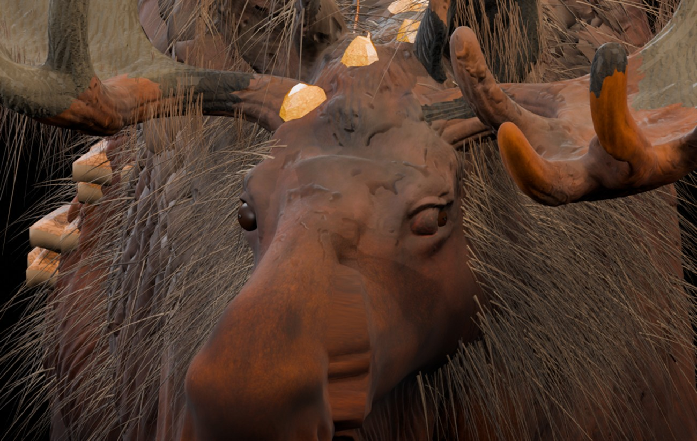

Лесной лось — реальная 3D-модель V30T
В этой версии переделаны обе глазницы непосредственно в меше головы, добавлены настоящие веки и горизонтальные зрачки. Вокруг 26 янтарных наростов сформирован рельеф кожи, на горбе и шее появилось 12 600 новых прядей. Ниже — реальные рендеры из Blender, не концепт-арт. Работа по доводке до AAAA продолжается.

1 / 5 — Лицо спереди, посадка обоих глаз
Открой изображение нажатием · Клавиши ← / →
ГлазаГеометрия глазниц и век включена в исходный меш головы
Шерсть12 600 дополнительных 3D-прядей, привязанных к телу
Кристаллы26 точек укоренения; рельеф кожи скорректирован